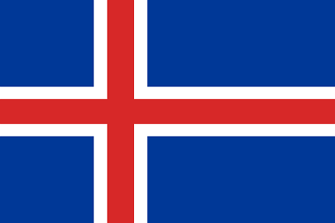

Islanti

- Hallintomuoto tasavalta
- Presidentti Guðni Thorlacius
- Pääkaupunki Reykjavík
- Pinta-ala 103 000 km²
Yleistä
Islanti (isl. Ísland) on saarivaltio Atlantin valtameren pohjoisosassa, välittömästi pohjoisen napapiirin eteläpuolella. Islanti on pinta-alaltaan noin kolmasosan Suomesta ja väkiluvultaan ja asukastiheydeltään selvästi pienin Pohjoismaa. Maan pääkaupunki on Reykjavík, jossa asuu noin kolmannes Islannin väestöstä. Se on maailman pohjoisin itsenäisen valtion pääkaupunki.
Saarella on aktiivista vulkaanista toimintaa: geysireitä, kuumia lähteitä ja toistuvia tulivuorenpurkauksia. Luonto on karu ja omaleimainen. Vuoden 2008 talousromahduksen jälkeen maa sai Kansainväliseltä valuuttarahastolta IMF:ltä hätäapua.
Islanti haki Euroopan unionin jäsenyyttä heinäkuussa 2009, kun sen talous oli ajautunut suuriin vaikeuksiin. Elokuussa 2013 se kuitenkin veti EU-jäsenyysneuvottelijansa pois Brysselistä.
Vuonna 2017 Islannin bruttokansantuote asukasta kohden oli 73 092 Yhdysvaltain dollaria, joka on maailman kolmanneksi korkein ja samaa tasoa Norjan kanssa. Islannin suurin elinkeino on turismi. Vuonna 2016 Islannin bruttokansantuote kasvoi 7,2 prosenttia.
Maantiede
Islannin valtio koostuu pääsaaren lisäksi lukuisista vähäisistä pikkusaarista ja luodoista. Niistä suurimmat ovat Heimaey (noin 13 km²), Hrísey (7,52 km²) ja Grímsey (4,6 km²). Näiden lisäksi vain neljä muuta on yli kahden neliökilometrin kokoisia. Pääsaaren pinta-ala on 101 826 neliökilometriä ja koko valtion noin 103 000 neliökilometriä.
Islanti sijaitsee Euraasian ja Pohjois-Amerikan mannerlaattojen välisellä saumalla. Tämän vuoksi Islannissa on suuri määrä tulivuoria, ja siellä tapahtuu myös paljon maanjäristyksiä. Islannin lounaispuolella sijaitsevien Vestmannasaarien eteläpuolelle syntyi 1960-luvulla vedenalaisten tulivuorenpurkausten seurauksena Surtseyn saari. Saari on ollut syntymisestään asti rauhoitettu, jotta tieteilijät voivat tutkia, kuinka kasvit ja eläimet valtaavat täysin uuden maa-alueen. Tulivuori Hekla purkautui viimeksi vuonna 2000. Sittemmin myös Eyjafjallajökull-jäätikön alla oleva samanniminen tulivuori alkoi purkautumaan vuoden 2010 alkupuolella. Purkauksen aiheuttama tuhkapilvi sotki lentoliikennettä koko Euroopassa.
Islannissa on paljon jokia, vesiputouksia ja sijaintinsa ansiosta myös paljon kuumia lähteitä, joilla tuotetaan geotermistä energiaa. Islannin suurin suihkuttava kuuma lähde on Geysir, joka on antanut nimensä moneen kieleen tarkoittaen suihkuttavaa kuumaa lähdettä. Islannissa on myös paljon jäätiköitä, ja noin 11,5 prosenttia maan pinta-alasta onkin jään peitossa. Euroopan suurin jäätikkö on Etelä-Islannissa sijaitseva Vatnajökull.
Korkeimmat vuoret ovat yli 2 000 metriä korkeita, ja maan korkein kohta on Vatnajökullin jäätiköllä sijaitseva Hvannadalshnúkur (2 110 m). Maan rannikko on melkein joka puolelta muodostunut monista vuonoista ja poukamista. Monin paikoin kallioseinämät kohoavat jyrkkinä suoraan merestä. Toisaalla taas kilometrien pituiset hietikot eli somerikot tai kivikot reunustavat merenrantaa. Rantaviivaa on kaiken kaikkiaan 4 970 kilometriä.
Kasvillisuus
Vain neljännes Islannin pinta-alasta on kasvillisuuden peittämää. Eroosio on voimakasta, ja sitä vastaan kamppailu on tärkeä osa luonnonsuojelua. Islannin lukuisat tulivuorenpurkaukset, merituuli ja lampaiden laiduntaminen ovat osaltaan aiheuttaneet sen, että Islannin luonto on karu ja autio. Maassa kasvaa kuitenkin lukuisia erilaisia kasveja; villejä lajeja tunnetaan useita satoja. Enimmäkseen ne ovat matalakasvuisia arktisten alueiden kasveja. Kaikkiaan putkilokasvilajeja tunnetaan 470, joista heinäkasvien lajeja on 53.
Islannissa tiedetään kasvaneen runsaasti metsää, mutta alkuperäiset metsät on saaren asuttamisen jälkeen hakattu lähes kokonaan, eikä tilalle ole kasvanut ilmaston kylmenemisen vuoksi uutta. Laaksoissa kasvaa kuitenkin tunturikoivu-, pihlaja- vaivaiskoivu- ja pajupensastoja. Heinä- ja saranurmet sekä varpunummet ovat hyvin yleisiä, ja kosteuden takia soitakin on muodostunut joillekin seuduille. Ne ovat lähinnä aapasoita palsakumpuineen ja kasvavat yleensä tupasvillaa. Sitkeitä kukkamättäitä tapaa keskellä hiekkaerämaita ja laavakenttiä. Sammalet ja vaivaiskoivut peittävät usein vanhaa laavaa ja muuten karua ympäristöä. Islanninjäkälää kasvaa laajoina mattoina, ja sitä on käytetty pula-aikoina ravinnoksi. Rannikoilla kasvaa oransseina läikkinä haavankeltajäkälää. Rantavesien leväkasvillisuus on rehevää. Yleisiä lajeja ovat ruskeanvioletti irlanninsammal ja vihreä rakkolevän sukulainen Fucus distichus.
Islannissa on käynnissä laajoja metsittämishankkeita. Metsitys on kuitenkin vaikeaa, sillä lähes kaikkialla vapaana laiduntavat lampaat syövät istutetut taimet. Siksi metsitettyjä alueita on jouduttu aitaamaan. Lisäksi metsien kasvu on varsin hidasta. Islantilaiset ovat kuitenkin päättäneet metsittää noin viisi prosenttia alavista maista vuoteen 2040 mennessä. Metsityksessä käytettäviä puulajeja ovat lähinnä tunturikoivu ja pihlaja, jotka kasvavat alueella luonnostaankin. Sitkankuusia on istutettu maan etelä- ja länsiosaan jo ennen toista maailmansotaa, ja siperianlehtikuusi menestyy myös kuivemmassa itäosassa.